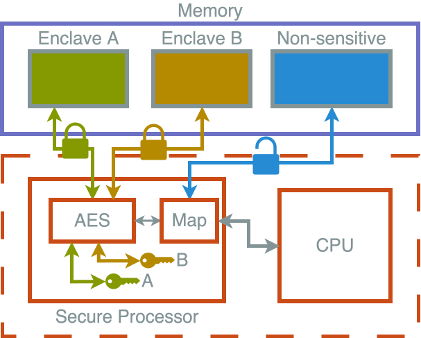
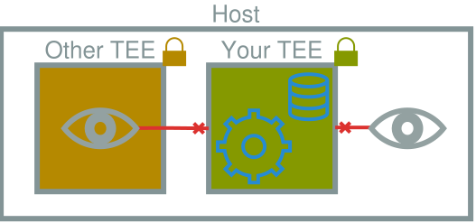
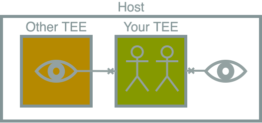

TEEs encrypt data in use.
With a TEE, you can use a computer in a way that is
private from other users, even the owner of
that computer.



TEEs run on untrusted hardware and software
So, how do we establish trust?
Attestation is the process where a TEE proves its state
The secure processor collects evidence and signs its claims.
The evidence is assessed by a verifier, who collects endorsements from the CPU vendor.
The verifier produces a report, used to decide whether or not to trust the TEE.
If the evidence or report are tampered with, the signature wouldn't match
Evidence cannot be forged, as it requires the secure processor's private key
So, the report is a set of correct claims, endorsed by the CPU vendor.
As the secure processor collects and signs evidence, the host OS, software and hypervisor don't need to be trusted.
You must trust
Why not all the security all the time?
Trusted compute base
There is a cost to introducing security
Use a TEE as part of your TRE when,
There are cases where extra protection from compromised hosts is valuable.
Systems used for confidential and non-confidential work have higher risk.
Use a TEE as part of your TRE when,
TEEs can enable new models of trusted research.
TEEs don't depend on the security of the host to run confidential workloads.
Use a TEE as part of your TRE when,
When it is not possible to modify data to reduce disclosure risk (as in Five Safes).
Situations where highly-motivated, sophisticated attackers may target the TRE infrastructure or infrastructure operator staff.
In the future, LLM agents may significantly lower the barrier to launching this kind of attack.
Use a TEE as part of your TRE when,
TEEs are not a "drop-in" solution.
Support is currently limited to the latest data centre hardware.
TREs will need to be modified.
Software inside a TEE must be trusted. Care must be taken to minimise the trusted application(s).
If you don't inspect an attestation report, you don't know if a TEE is secure!
Attestation policies must be developed and maintained.
Some approaches will require more infrastructure, for example workload-level attestation, or ejecting non-compliant TEEs.
Adopting TEEs may require building on vendor-specific features, APIs and attestation fields.
Generic interfaces to TEEs are in the early stages of development.
Discuss the prompts in groups
A facilitator will join your group and scribe
At the end, one person from each group will share out
Do you have feedback for our recommendations?
What do you think about TEEs for TREs?
Read the recommendations (and considerations) in full
alan-turing-institute.github.io/trustee_cc_review/tees-for-tres